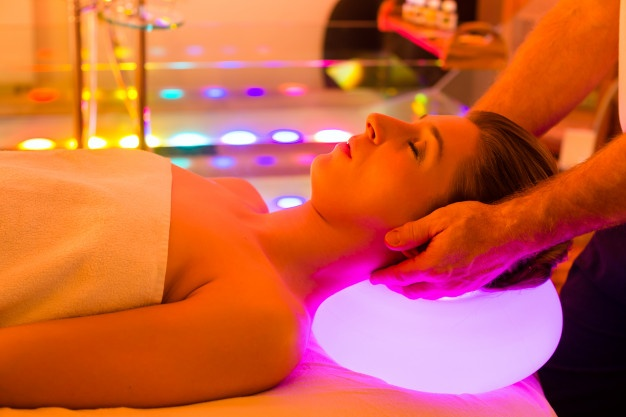

1. Efectos hormonales, la teoría científica actual de la cromoterapia se basa en la acción de la luz sobre la glándula pineal, que estimula o inhibe la secreción de determinadas hormonas y neurotransmisores. Este mecanismo explica los efectos demostrados sobre la presión arterial, las frecuencias cardiaca y respiratoria y la actividad eléctrica del cerebro.
2. Colores cálidos y fríos, éstos son estimulantes y ayudan, por ejemplo, a las personas con depresiones reactivas. En cambio, los colores fríos son relajantes y pueden utilizarse para tratar la ansiedad o la hipertensión.
3. Contra la depresión estacional, el tratamiento más extendido es el que se realiza con luz blanca y brillante contra el trastorno afectivo estacional, un tipo de depresión con mayor incidencia en los países nórdicos, donde la dosis de claridad se reduce durante el invierno. El mismo tipo de luz es empleado ante la anorexia y la bulimia nerviosa, el insomnio y las drogodependencias.
4. Estética para tu piel, el auge de este tipo de tratamientos en estética viene motivado por la suma de beneficios que conllevan. Así pues, estudios recientes cercioran que la aplicación de luz LED, a través de la cromoterapia facial, aporta beneficios no solo físicos y estéticos, sino también emocionales.
5. Relajación, la cromoterapia facial ayuda a disminuir la rigidez facial gracias al efecto terapéutico del color en nuestro cuerpo.
6. Bioestimulación, este beneficio de la cromoterapia facial con luz LED es el que logra que nuestra piel luzca revitalizada, rejuvenecida y nutrida. Todo ello gracias a su poder de renovación celular y su poder antiarrugas
Entre otros beneficios, Disminución del cansancio físico, disminución de los transtornos del sueño, ayuda en eñ tratamiendo de dolores de cabeza, etc.
MODOS DE USO
1. En el escritorio, para poder ayudar a aliviar el estrés de tantas horas sentado.
2. En la habitación, en este espacio MENKI te puede ayudar a conciliar el sueño y poder descansar mejor.
3. Si sueles meditar, puedes colocarlo en este espacio para poder ayudar a mejorar tu concentración
3. En la biblioteca, la colorterapia te ayuda a la concentración y poder tener una mejor compresión de los textos.
 Colorterapia para la relajación.